ペットも高齢化が進み、犬の介護（ケア）が重視されています。
また、動物の持つ『癒し』の考課を治療に生かしたアニマルセラピーも、今業界で注目の分野です。
ECOのカリキュラムでは、従来の動物看護に加え、これらの新しい専門分野も積極的に導入。
人と動物が共に幸せに暮らせる生活をサポートします。
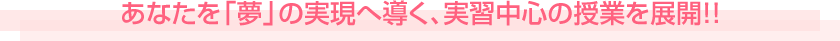
 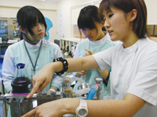
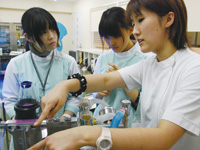
■看護演習
看護演習の授業では、動物病院のお仕事の基礎から応用までの技術を学びます。１年次では、カルテ作成や身体一般検査・保定・薬物の投与法・注射法・各種血液検査・心電図やエコーに関する知識・各種器具の取り扱いなどを学び、２・３では、麻酔や術前準備・術前検査・避妊・去勢手術やスケーリング（歯石除去）など動物病院で即戦力となれる技術の習得を目指します。
■病院演習
動物への肉体的・精神的負担を軽減するために、獣医師と協力して動物の治療にあたる、動物看護師。その重要なお仕事に手術助手があります。獣医師とともに、手術に入ることはもちろん、術前検査・麻酔管理・術後の入院管理と、看護師のお仕事は大忙しです。動物介護・理学療法も学び、様々な手術に対応し、かつ術後のリハビリやケアも担える動物看護師を育成しています。
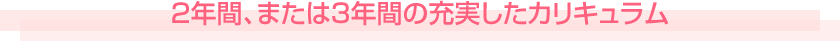
- 動物看護師専攻
- 動物看護福祉専攻
- 動物理学療法専攻
| 1年生【時間割】 | 月 | 火 | 水 | 木 | 金 | 土 |
|---|---|---|---|---|---|---|
| 1限目 9:20～10:50 |
動物の体の 仕組み |
看護演習 | ダブルメジャー カリキュラム 【→Wメジャーとは】 |
|||
| 2限目 11:00～12:30 |
コンピューター 演習 |
動物の体の 仕組み |
プレゼン テーション |
看護演習 | ||
| 3限目 13:20～14:50 |
公衆衛生 | エコ教養 | 英会話 | グルーミング | 動物の 健康管理 |
|
| 4限目 15:00～16:30 |
HAB | グルーミング | コンパニオン ドッグ |
|||
| 5限目 16:40～18:10 |
アニマルト レーニング |
動物看護学 |
| 卒業年次 【時間割】 |
月 | 火 | 水 | 木 | 金 | 土 |
|---|---|---|---|---|---|---|
| 1限目 9:20～10:50 |
エキゾチック アニマル |
看護演習II | 獣医関連法規 | エコ教養 | ダブルメジャー カリキュラム 【→Wメジャーとは】 |
|
| 2限目 11:00～12:30 |
基礎薬理 | 看護演習II | 症例検討 | 食餌と栄養 | ||
| 3限目 13:20～14:50 |
症例検討 | 臨床獣医 | 繁殖と遺伝 | 臨床検査 演習 |
||
| 4限目 15:00～16:30 |
臨床獣医 | 臨床検査 演習 |
||||
| 5限目 16:40～18:10 |
卒業研究 |
| 1年生【時間割】 | 月 | 火 | 水 | 木 | 金 | 土 |
|---|---|---|---|---|---|---|
| 1限目 9:20～10:50 |
アニマル トレーニング |
コンピュータ | グルーミング | ダブルメジャー カリキュラム 【→Wメジャーとは】 |
||
| 2限目 11:00～12:30 |
社会人 教養 |
公衆衛生 | グルーミング | |||
| 3限目 13:20～14:50 |
障害者乗馬 | エコ教養 | HAB | 英会話 | 看護演習 | |
| 4限目 15:00～16:30 |
障害者乗馬 | 動物の 体のしくみ |
社会福祉 概論 |
看護演習 | ||
| 5限目 16:40～18:10 |
| 2年生【時間割】 | 月 | 火 | 水 | 木 | 金 | 土 |
|---|---|---|---|---|---|---|
| 1限目 9:20～10:50 |
猫学 | 東洋医学 | 動物の 栄養管理 |
病院実務 | ダブルメジャー カリキュラム 【→Wメジャーとは】 |
|
| 2限目 11:00～12:30 |
エキゾチック アニマル |
アニマル セラピー |
動物の 健康管理 |
病院事務 | ||
| 3限目 13:20～14:50 |
人と動物の 応用心理 |
エコ教養 | 臨床検査 演習 |
AAA演習 | ||
| 4限目 15:00～16:30 |
社会人 教養 |
臨床検査 演習 |
AAA演習 | |||
| 5限目 16:40～18:10 |
| 3年生【時間割】 | 月 | 火 | 水 | 木 | 金 | 土 |
|---|---|---|---|---|---|---|
| 1限目 9:20～10:50 |
卒業研究 | 基礎薬理 |
病院演習 | 症例検討 | ダブルメジャー カリキュラム 【→Wメジャーとは】 |
|
| 2限目 11:00～12:30 |
ナチュラルケア | エコ教養 | 病院演習 | ブリーディング | ||
| 3限目 13:20～14:50 |
応急処置 | 動物介護 | 獣医関連 法規 |
|||
| 4限目 15:00～16:30 |
野生動物概論 | 手話 | 動物理学 療法 |
|||
| 5限目 16:40～18:10 |
| 1年生【時間割】 | 月 | 火 | 水 | 木 | 金 | 土 |
|---|---|---|---|---|---|---|
| 1限目 9:20～10:50 |
看護演習 | 体の仕組み | HAB | ダブルメジャー カリキュラム 【→Wメジャーとは】 |
||
| 2限目 11:00～12:30 |
看護演習 | 体の仕組み | 健康管理 | |||
| 3限目 13:20～14:50 |
障害者乗馬 | トレーニング | グルーミング | 社会人教養 | 公衆衛生 | |
| 4限目 15:00～16:30 |
障害者乗馬 | グルーミング | エコ教養 | 社会福祉概論 | ||
| 5限目 16:40～18:10 |
コンピュータ |
| 2年生【時間割】 | 月 | 火 | 水 | 木 | 金 | 土 |
|---|---|---|---|---|---|---|
| 1限目 9:20～10:50 |
AAA演習 | 臨床検査 | 動物介護 | ダブルメジャー カリキュラム 【→Wメジャーとは】 |
||
| 2限目 11:00～12:30 |
AAA演習 | 猫学 | 臨床検査 | ナチュラルケア | ||
| 3限目 13:20～14:50 |
小動物の管理 | アニマルセラピー | 産業動物概論 | 動物看護学 | ||
| 4限目 15:00～16:30 |
動物栄養学 | エコ教養 | 心理学 | |||
| 5限目 16:40～18:10 |
動物理学療法 |
| 3年生【時間割】 | 月 | 火 | 水 | 木 | 金 | 土 |
|---|---|---|---|---|---|---|
| 1限目 9:20～10:50 |
病院演習 | 卒業研究 | ダブルメジャー カリキュラム 【→Wメジャーとは】 |
|||
| 2限目 11:00～12:30 |
エコ教養 | 病院演習 | 基礎薬理 | 応急処置 | 東洋医学 | |
| 3限目 13:20～14:50 |
動物理学療法演習 | 獣医関連法規 | エキゾチック アニマル |
症例検討 | ||
| 4限目 15:00～16:30 |
動物理学療法演習 | ブリーディング | 症例検討 | |||
| 5限目 16:40～18:10 |
野生動物概論 |
- ■動物看護学
- 動物看護師としての心構えや1日の仕事の流れ、疾患動物の看護の意識、人の看護との違いなどについて学習します。

- ■臨床検査実習
- 血液検査・尿検査・糞便検査など、動物病院で行われるさまざまな検査の実習を行います。
- ■看護実習
- 犬の保定・カルテの作り方・身体一般検査・注射法などについての実習を行います。
- 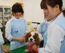
- ■動物の健康管理
- 犬猫の感染症・ワクチンなど、基本的な病気を知り、飼い主教育を行う知識を深めます。
- 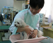
- ■ナチュラルケア
- 獣医療でも注目の、アロマやホメオパシーなどの自然療法について学びます。
- 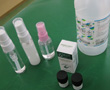
- ■動物介護
- ほぐす、もむ、たたくといった筋肉のクールダウンマッサージと、犬のためのリラックスマッサージの技法と効用を学びます。
- 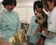
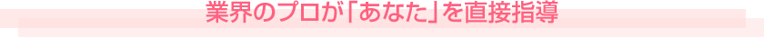
- 「動物のしつけ」
の授業を担当 - 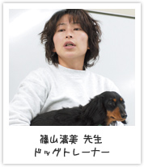
- きちんとしたしつけは、犬との生活に幸せをもたらします。
全ての犬と飼い主さんが幸せに暮らせるように、みんなが力を合わせてがんばりましょう。
- 「人と動物の心理学」
の授業を担当 - 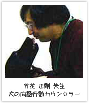
- 動物と人の双方からアニマルセラピーを実践できる人材の育成に力を注いでいます！
- 「カルディア動物行動クリニック」
主催 - 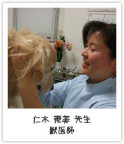
- カルディア動物行動クリニックを主宰し、言葉を話さない動物の“心”を伝える診療を行うとともに、二箇所の動物病院でも非常勤獣医師として、問題行動を中心に、診療にあたっています。
- 「障害者乗馬」
の授業を担当 - 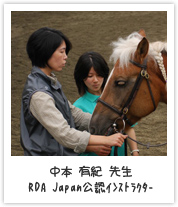
- 日本では数少ない障害者乗馬の公認インストラクターとして活躍しています。実習を通じて、障害者心理やリハビリについて学びましょう。
2012年2月より、「動物看護師統一認定機構」認定の
統一認定試験が実施され、公的資格化に向けて、ますます
動物看護師の活躍が期待されています。
大阪コミュニケーションアート専門学校は、
公益社団法人日本動物病院福祉協会（JAHA）
認定養成校として、厳しい認定基準を満たし、資格取得に
向けたカリキュラム、試験対策授業を実施。卒業後は
認定動物看護師として、動物病院での活躍が待っています。
- 動物看護師は、病気やケガをした動物の看護や、獣医師の医療補助を行う専門家です。検査や手術助手など、幅広い知識と技術を持って、看護や介護、リハビリにあたります。また、動物との幸せな生活のために、家庭でのしつけやグルーミング、食事管理など、飼い主さんへのアドバイスも行います。
ペット（コンパニオンアニマル）から大動物まで、あらゆる動物種を対象に、広く動物看護に携わり、高い専門性と優しい心を持って、飼い主さんと動物を支える「ナイチンゲール」として活躍しています。
- ● 受付／カルテ管理｜会計業務
● 診察補助／身体検査｜採血や注射の補助
● 薬局業務／薬の管理｜分包｜処置の薬準備
● 検査／血液検査｜心電図検査｜レントゲン検査
● 手術補助／器具の減菌｜麻酔管理｜手術助手
● 動物看護／入院管理｜食事管理｜助産｜介護｜理学療法｜救急看護
● 飼い主教育／しつけ｜グルーミング｜予防接種｜食事管理
など
- ■合同企業説明会
- 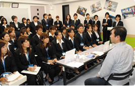
- 年2回（6月・9月）、
ECOで内定獲得のチャンス！！
企業・施設の人事担当者や店長様にご来校いただき、業界の現状や仕事内容などをお話いただきます。同時に採用面接会も実施！説明会をキッカケに多数の学生が内定をいただきます。夢へ直結する大切なイベントです。
- ■キャリアセンター
- 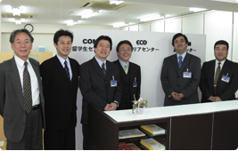
- 就職に関しては、私たちに全て
お任せください。
全員が希望する業界に就職できるように、入学したその日から就職内定が決定するまで、たとえそれが卒業後であっても、ECOでは1人ひとりを徹底的にバックアップ！あなたの夢を必ず実現させるのが「キャリアセンター」なのです。
- ■インターンシップ
- 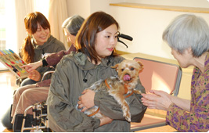
- プロの現場でお仕事を体験！
多くの学生が内定を獲得。
動物病院・動物保護施設・ペットショップ・福祉施設など、あなたの希望する職場で実際にお仕事を体験できる。それがインターンシップ（業界研修）です。様々な現場での体験を通して、あなたにぴったりの職場での就職が実現できるのです！
●うめだ東動物病院
●フレンズ動物病院
●アイン動物病院
●やまだ動物病院
●久野喜動物病院
●おざき動物病院
●神戸三田動物医療センター
●林屋動物診療室 桃山
●京都中央動物病院
●あや動物病院
●南大阪動物医療センター
●あさの動物病院
●林屋動物診療室 洛西
●千里桃山台動物病院
●和泉動物病院
●あすなろ動物病院
●西村動物病院
●竜之介動物病院
●川島動物病院
●西谷獣医科病院
●柏原獣医科病院
●あすなろ動物病院
●中島獣医科病院
●ルカ動物医療センター
●宝町動物病院
●アツキ動物病院（現アツキ動物医療センター）
●ジャム動物病院
●南動物病院
●新三田イシモト動物病院
●ダクタリ動物病院京都病院
●オレンジ動物病院
●たかもり動物病院
●ファミリー家畜動物病院
●ダクタリ動物病院京都病院
●グリーン動物病院
●おざき動物病院
●くまちゃん動物病院
●ワールド動物病院
●廣岡獣医科病院
●比良動物病院
●澤村獣医科
●泉南動物病院
●動物メディカルセンター
●王寺動物病院
●サンペットクリニック
●堀江動物医療センター
●しもむら動物病院
●富田獣医科病院
●ラスティーペットクリニック
●フクナガ動物病院
●クローバー動物病院
●レオ動物病院
●アイ ペットクリニック
●きんせい動物病院
●甲南動物病院
●グリンピース動物病院
●なかで動物病院
●ツルノ獣医科病院
●堀江動物医療センター
●ハマグチ動物病院
●松原動物病院
●福田獣医科クリニック
●酒井動物クリニック
●山本動物病院
●山下動物病院
●京阪動物病院
●アサヒペットクリニック
●林屋動物診療室 桃山
●今里動物病院
●ダクタリ動物病院関西医療センター
●ゆず動物病院
●佐藤獣医科病院
●奥本動物病院
●ツルノ獣医科病院
●おいけ動物病院
●林屋動物診療室
●小儀動物病院
●三木動物病院
●モコ動物病院
●東田獣医科
●バオ動物病院
●山下動物病院
●ラスティーペットクリニック
●吉田動物病院
●こてつ動物病院
●スマイル動物病院
●窓場動物病院
●大門動物病院
●大正動物医療センター
●久野喜動物病院
●ミュウどうぶつ病院
●中田獣医科医院
●吹田どんぐり動物病院
●男山動物病院
●アイン動物病院
●松尾動物病院
●おざき動物病院
●みなくち城南動物病院
●ペットクリニックタニ
●秋山動物病院
●ふくだ動物病院
●動物メディカルセンター
●白井動物病院
●林屋動物診療室
●みなせ動物病院
●かなか動物病院
●横田動物病院
●松本動物病院
●アイル動物病院
●堀江動物医療センター
●日本橋動物病院
●ゆうなぎ動物病院
●山本動物病院
●もみの木動物病院
●くずはトータルペットクリニック
●大淀どうぶつ病院
●野田山動物病院
●こにし動物クリニック
●千里桃山台動物病院
●酒井動物クリニック
●堀江動物医療センター
●日本橋動物病院
●ゆうなぎ動物病院
●山本動物病院
●もみの木動物病院
●大淀どうぶつ病院
●野田山動物病院
●エルザ動物病院北神戸
●アサヒペットクリニック
●動物メディカルセンター
●みなくち城南動物病院
●上敷領動物病院
●吉田動物病院
●ワールド動物病院
●薮添動物病院
●神戸エルザ動物病院
●南大阪動物医療センター
●京阪動物病院
●ロン動物病院
●かなか動物病院
●レオ動物病院
●東福岡たぬま動物病院
●吉田動物病院
●草津犬猫病院
●ヒロ動物病院
●ナイル動物病院
●おざわ動物病院
●ダクタリ動物病院京都病院
●塚口獣医科医院
●いかるが動物病院
●瀬田アニマルクリニック
●もともち動物病院
●王寺動物病院
●ごんた動物病院
●増田イヌネコ病院
●アイン動物病院
●たきもと動物病院
●アツキ動物病院（現アツキ動物医療センター）
●たかだ動物病院
●クラーク動物病院
●王寺動物病院
●クウ動物病院
●富田獣医科病院
●セントラル動物病院
●千里桃山台動物病院
●バオ動物病院
●動物メディカルセンター
●くぼた動物病院
●北園田動物病院
●甲東動物病院
●あかまつ犬猫病院
●ウッディタウン動物病院
●うえの動物病院
●ルカ動物医療センター
●みなせ動物病院
●ツルノ獣医科病院
●岸上獣医科病院
●林屋動物診療室
●オリーブ動物病院
●ツルノ獣医科病院
●オオジ動物病院
●宝町動物病院
●にじょう動物病院
●会亀動物病院
●いうち動物病院
●小儀動物病院
●やまいり動物病院
●ラスティーペットクリニック
●枚方動物病院
●動物病院ファミリー
●みかさ動物病院
●大木動物病院
●ダクタリ動物病院関西医療センター
●あすなろ動物病院
●21(ツーワン)動物病院
●ゆず動物病院
●ラスティーペットクリニック
●梅津動物病院
●花園動物病院
●アイン動物病院
●たなか動物病院
●おざき動物病院
●アツキ動物病院（現アツキ動物医療センター）
●きど動物病院
●千里桃山台動物病院
●和田動物病院
●花園動物病院
●鳥越動物病院
●ハンダ動物病院
●たなか動物病院
●堀江動物医療センター
●クラーク動物病院
●アサヒペットクリニック
●酒井動物クリニック
●千里ニュータウン動物病院
●ごんた動物病院
●おざわ動物病院
●大正動物医療センター
●小儀動物病院
●春日丘動物病院
●よねだ動物病院
●アニマ動物病院
●かすみケ丘動物病院
●志水動物病院
●あおぞら動物病院
●みやづ動物病院
●兵庫ペット医療センター
●舞鶴動物医療センター
●酒谷動物病院
●らく動物病院
●きど動物病院
●たかやまペットクリニック
●犬山動物病院
●くまがい動物病院
●ワールド動物病院（広島）
●はやし動物病院
●きりん動物病院
●泉南動物病院
●高島獣医科グループ富山東病院
●北須磨動物病院
●ラスティーペットクリニック
●エミ動物病院
●フィール動物病院
●大山動物病院
●京都中央動物病院
●南大阪動物医療センター
●枚方動物病院
●まつおか動物病院
●あおぞら動物病院
●みどり動物病院
●ファーブル動物医療センター
●マックスドッグ＆キャットクリニック
●林屋動物診療室（洛西）
●久野喜動物病院
●堀江動物医療センター
●チカコアニマルクリニック
●いもと動物病院
●エルザ動物病院グループ
●モデナ動物病院
●動物メディカルセンター
●泉南動物病院
●まつおか動物病院
●ラーク動物病院
●パナシア動物病院
●ダクタリ動物病院関西医療センター
●きむら動物病院
●舞鶴動物医療センター
●トム動物病院
●南が丘動物病院
●赤塚犬猫病院
●こにし動物クリニック
●アサヒペットクリニック
●マール動物病院
●ジェームス山ペットクリニック
●らく動物病院
●林屋動物診療室 桃山
●ハッピー動物病院
●天満動物病院
●林屋動物診療室
●京阪動物病院
●矢田獣医科病院
●アサヒペットクリニック
●長居動物病院
●こにし動物クリニック
●田辺獣医科医院
●たい動物病院
●坂本犬猫病院
●アリスペットクリニック
●箕面桜ケ丘動物病院（新規開業）
●ゆうなぎ動物病院
●みなせ動物病院
●アツキ動物病院（現アツキ動物医療センター）
●フクナガ動物病院
●フルール動物病院（新規開業）
社会福祉法人 東和福祉会 寝屋川苑 勤務
田中さん
元々お年よりの方と接するのが好きだったので、「ありがとう」の言葉が本当に嬉しいです。馬やポニーとのふれあいでは、参加された方が、素敵な笑顔を見せてくれるんですよ。この仕事を通して、人を思いやる気持ちの大切さに気付きましたね。
和泉動物病院 勤務
佐藤さん
大好きな動物たちに囲まれて働ける動物看護師は、とても楽しくやりがいのあるお仕事です。ツライことがあっても、大好きな動物たちがいれば大丈夫ですね。体力の続く限り、この素晴らしいお仕事を続けていきたいと思っています。
イワタ動物病院 勤務
吉沖さん
命を預かる仕事だからこそ、たくさんのやりがいを感じます。元気になって帰っていく動物を見た時、飼い主さんが「ありがとう」と言って下さった時…辛いこともあるけれど、今この仕事をして、毎日色んな動物たちに出会えてとても幸せです！
藪添動物病院 勤務
元山さん
犬・猫に加え、野生動物やエキゾチックアニマルの看護にも携わりたかったので、動物看護福祉専攻で学んだことを活かし、今ではフクロウやムササビの看護も任せられています。幅広く動物をケア出来る看護師として、ずっと仕事を続けて行きたいです！
ECOでは、卒業後に学ぶ環境を提供するとともに、さらに学びたいという向上心を持っていただき、
永く業界で活躍して欲しいという願いから、卒業生を中心にして「卒後教育セミナー」を行っております。
皆さんで現場力を高めて、すばらしい業界にしていきましょう！
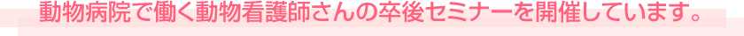
今回のシリーズは『新人指導』ということで、ほとんどの人が３年以上動物病院で働く先輩看護師さんたち。中には勤務１１年目という方も。
何年目になっても学ぶ姿勢がすばらしいです
講師の先生は「関西動物看護教育研究会（Ｋ４）」の山内先生と高橋先生。共に、超ベテラン動物看護師さんです
このセミナーは３回続きなのですが、今回（第２回）は、先月話し合った内容について各自が考えてきたものを出し合い、
さらにグループでディスカッションしていきます。
新人さんを指導する時によくある悩みや病院内での働きやすさなど、みなさん真剣に考え、発表していました
ECOの卒後セミナーは話を聞くだけではなく、グループワークや実習などで実践的な内容にしています。
初対面同士のディスカッションですが、同じ仕事をするプロ同士、毎回話が盛り上がり連帯感が生まれる充実したセミナーに参加者のみなさんからも
大好評をいただいています
興味を持たれた動物看護師さんたち、ぜひぜひご参加ください 参加が初めての方も歓迎いたします
次回開催の情報や、申し込み方法はこちら。お待ちしています。